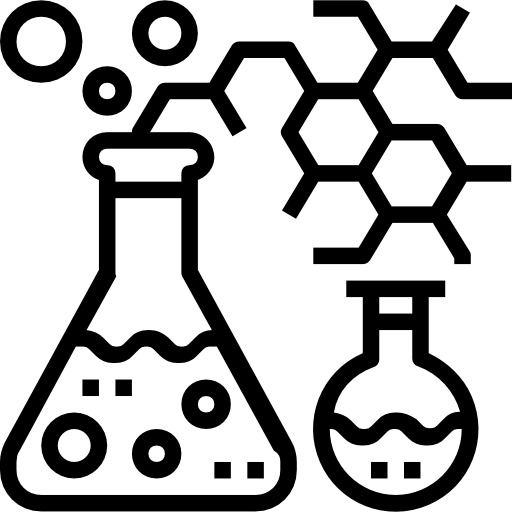
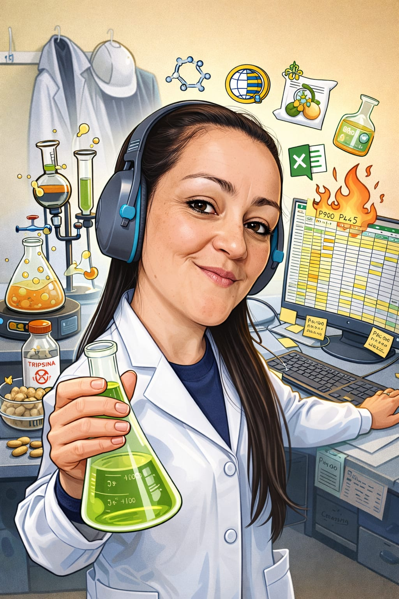
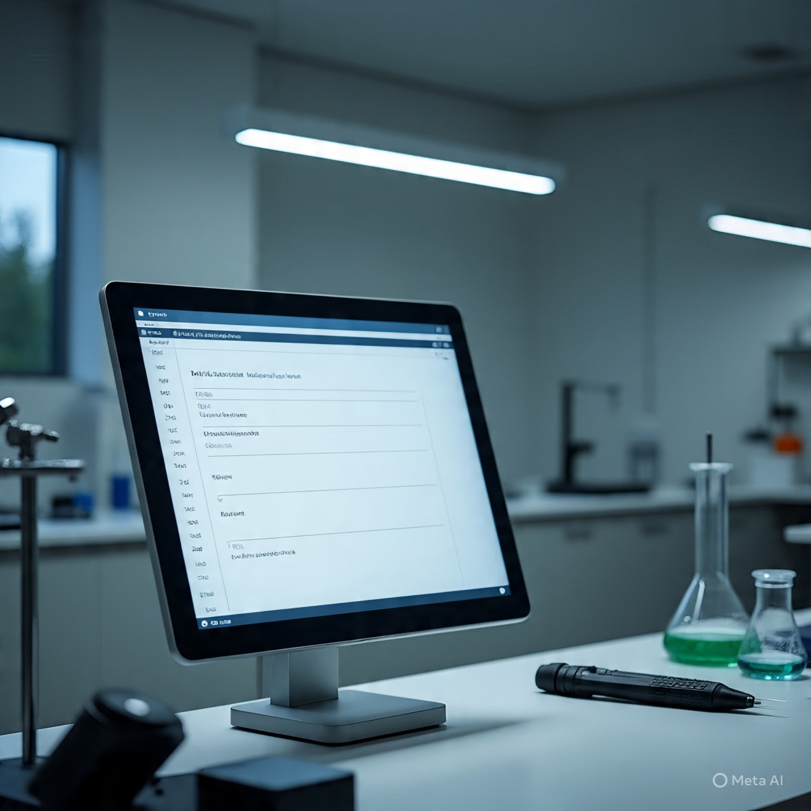
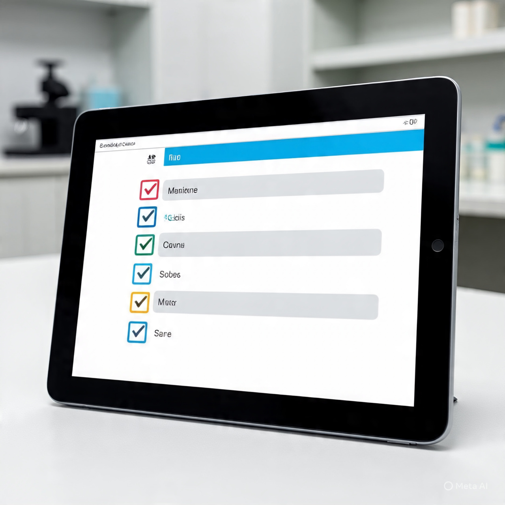
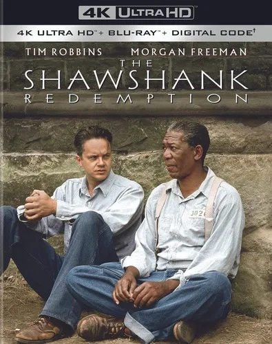
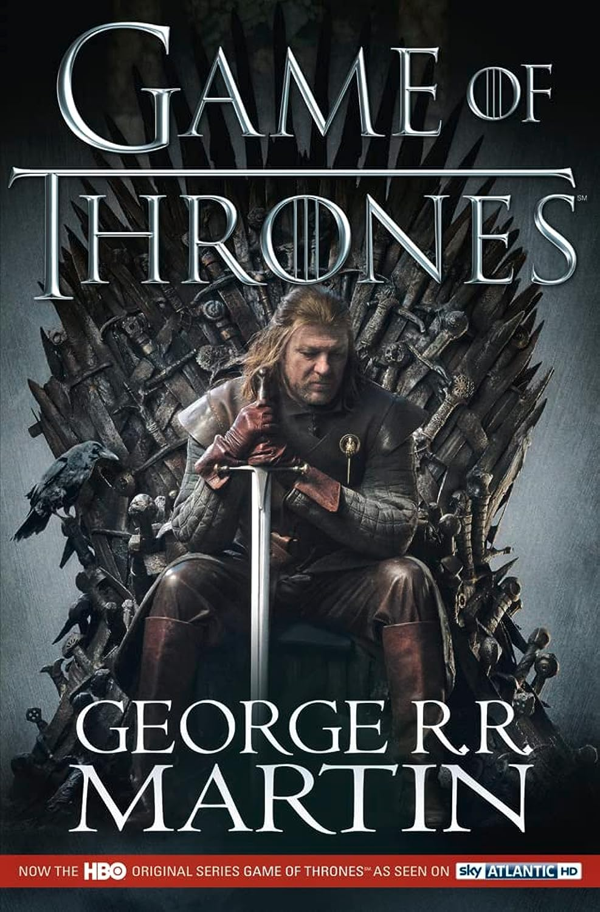
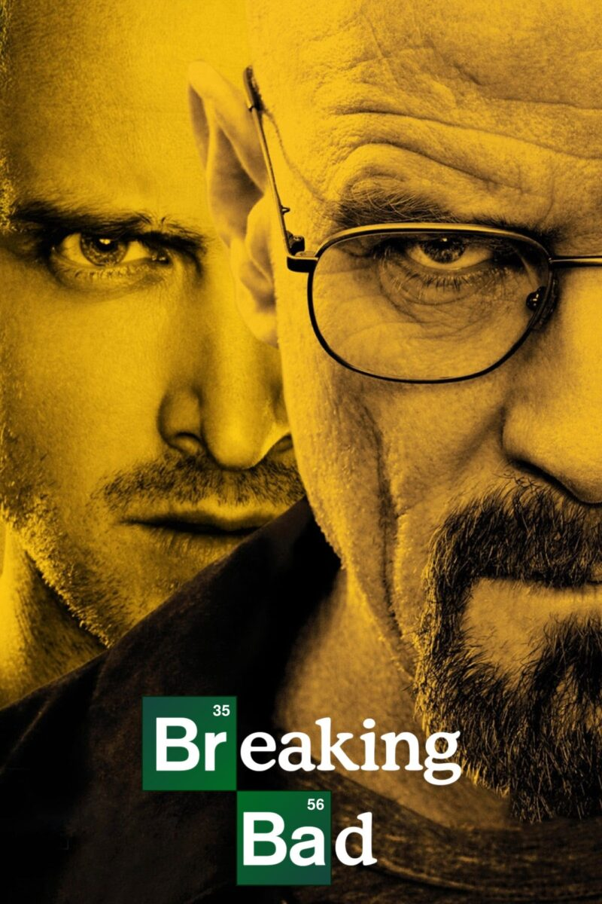

Sobre míMi nombre es Verónica, tengo 45 años y resido actualmente en la ciudad de Bahía Blanca. Soy bioquímica y me desempeñé siempre en el área industrial, guiada por mi interés en la ciencia y la biología. Desde hace tres años me estoy formando en el mundo de la programación mediante cursos y capacitaciones, y actualmente curso el segundo año de la Tecnicatura en Desarrollo de Software. Mi objetivo es fusionar conocimientos científicos y programación para crear soluciones innovadoras que tengan un impacto real y se adapten a las realidades que experimento en mi día a día.

Proyectos

Sistema de gestión para laboratorio orientado a reemplazar el uso de Excel, permitiendo controlar stock, registrar resultados, gestionar materias primas y generar informes. Surge a partir de necesidades reales en un entorno industrial.

Aplicación para digitalizar protocolos de laboratorio mediante checklists, permitiendo estandarizar procesos, validar tareas y mejorar la trazabilidad. Orientada a optimizar la organización y reducir errores en entornos de trabajo controlados.
Habilidades
- Lenguajes: Java, Python, C#, Kotlin
- Desarrollo Web: HTML, CSS
- Bases de datos: MySQL
- Pendientes de aprender: Node, React, bases de datos no relacionales
 Mis Películas/ Series Favoritas
Mis Películas/ Series Favoritas

The Shawshank Redemption
Drama que sigue la historia de un hombre condenado injustamente a prisión, donde forma una profunda amistad con otro recluso, que le permite sobrellevar la dureza de la vida en la cárcel.

Game of Thrones
Serie de fantasía épica ambientada en los continentes de Westeros y Essos, donde distintas familias nobles luchan por el poder y el control del Trono de Hierro.

Breaking bad
Walter White es un profesor de química que, tras recibir un diagnóstico de cáncer, comienza a adentrarse en el mundo del crimen.
 Mis Discos Favoritos
Mis Discos Favoritos

15 aniversario Luna Park
Cultura Profética

Crisis
Las Pastillas del Abuelo

Hopes and Fears
Keane
 Mi manada
Mi manada

Ema Dominga

Penny Lane

Tommy Lee

Robb Stark